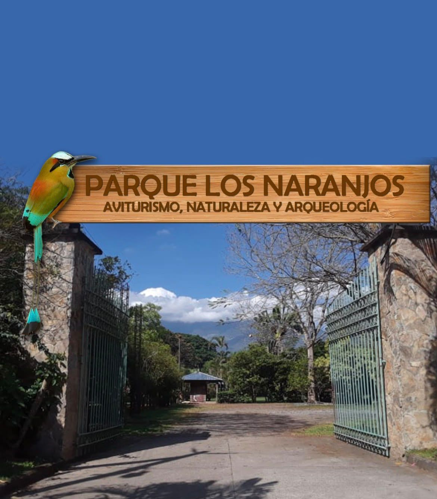
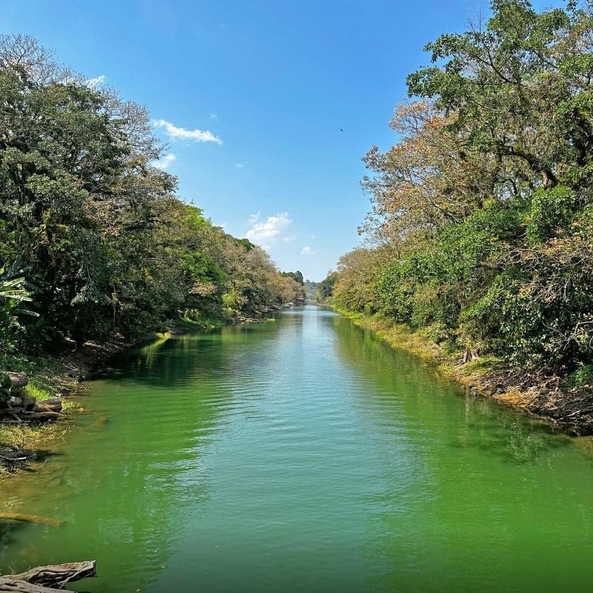
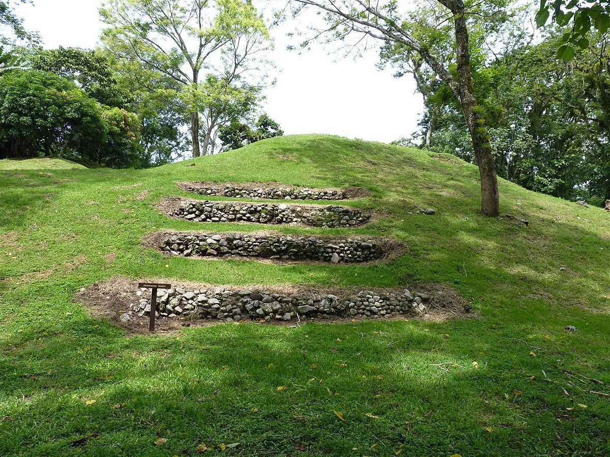
Recorre los montículos y estructuras que dan testimonio de los pueblos que habitaron la región.
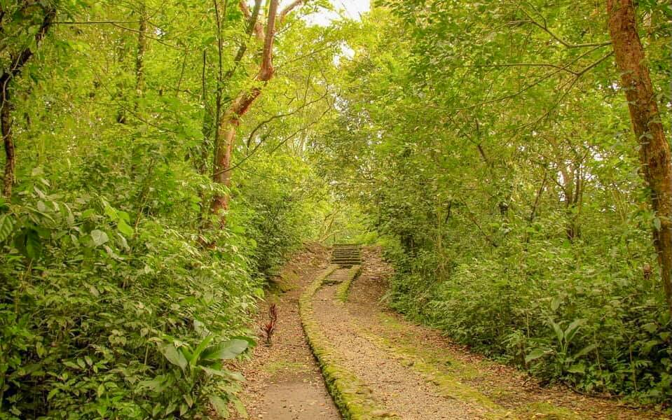
Senderos rodeados de vegetación y paisajes ideales para caminar con calma y observar la naturaleza.
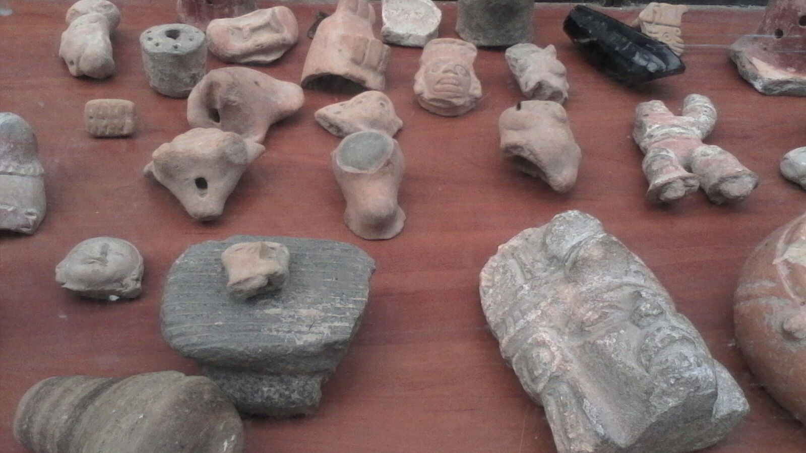
Descubre la herencia de las comunidades antiguas y su relación con el territorio.
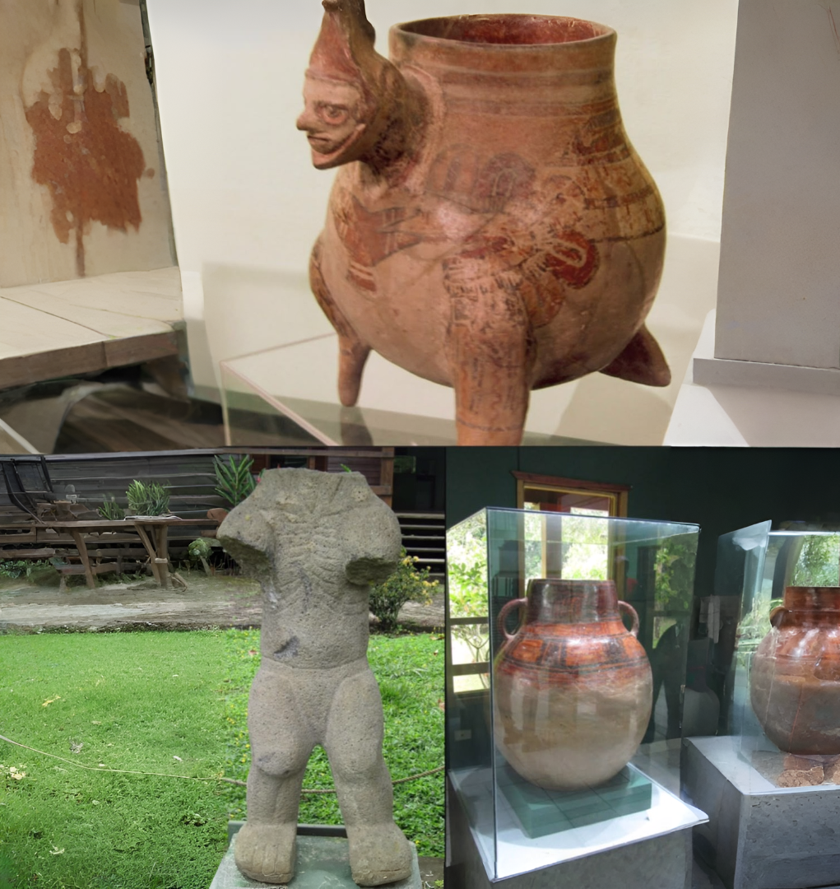
Más de 2,800 años de historia en uno de los asentamientos más antiguos de Honduras.
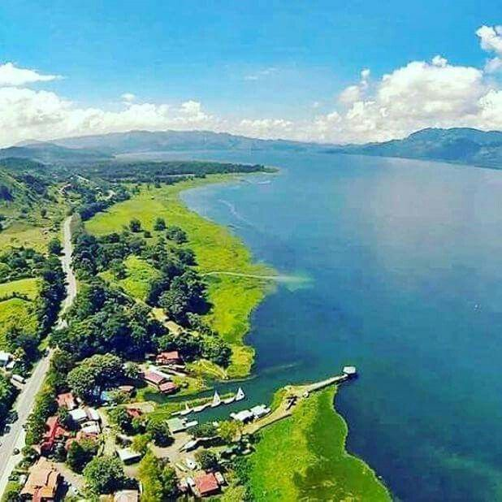
Un destino que se combina con la belleza natural de Santa Cruz de Yojoa y sus alrededores.
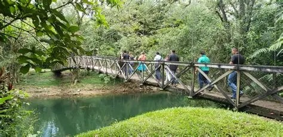
Conoce el sitio acompañado de una guía que te explique su historia y significado.
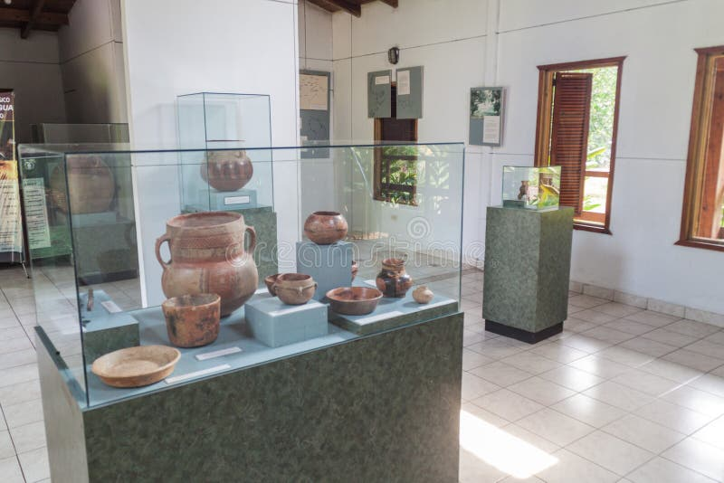
Piezas y explicaciones que ayudan a entender la vida de los antiguos habitantes.
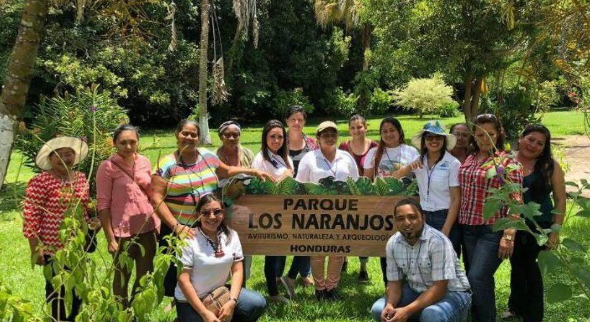
Un lugar para aprender, caminar y compartir en familia o con grupos escolares.
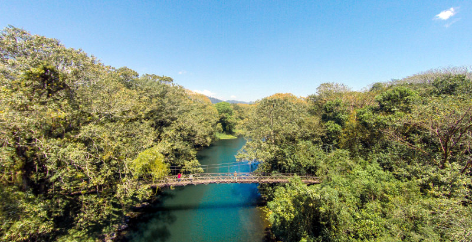
Rincones perfectos para fotografiar la arqueología y la naturaleza juntas.
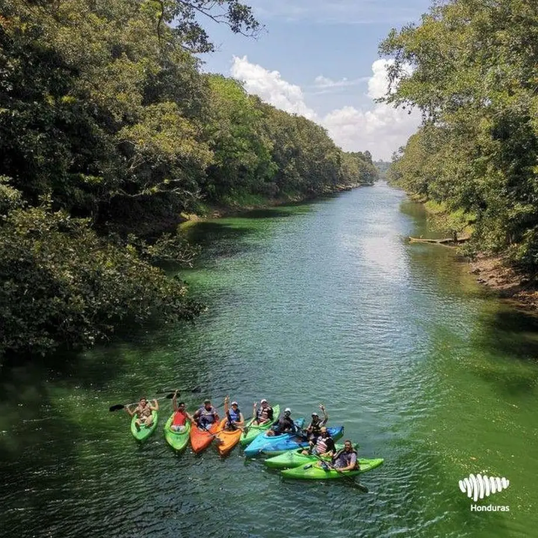
Los Naranjos es un sitio arqueológico y uno de los asentamientos humanos precolombinos más antiguos de Honduras, con una antigüedad estimada de más de 2,800 años. Fue descubierto por Doris Stone en 1934 y hoy es un parque eco arqueológico ubicado en El Jaral, Santa Cruz de Yojoa, departamento de Cortés. Su nombre rinde homenaje a las comunidades que habitaron la zona.
Planifica tu visita